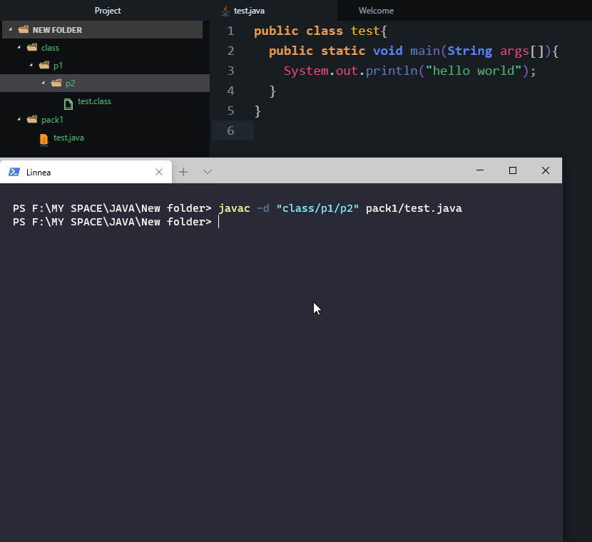

At first set the cmd path to your desired java program folder. If you don’t know how to do it check my this blog post: How to use terminal to compile and run java program

Now I will set the path inside the package “pack1” by writing “cd pack1”. Then we are going to compile the java program at first. So we write “javac” in the beginning. Then we write “-d” , which denoted that we are going to save the java class file in another directoy. And then we write “../class”, which is the path we set for the java class files in relation to this path “F:\MY SPACE\JAVA\New folder\pack1”.
Now in relation to this path ” F:\MY SPACE\JAVA\New folder\pack1”, to direct the javac to the class folder we at first write ”../”, which means go to the previous folder. Then from the previous folder point, which is “F:\MY SPACE\JAVA\New folder”, we point to the class folder “class”. That’s why we write “../class”. At the end we write the name of the java program file, which is test.java. Remember we are writing everything in relation to this path “F:\MY SPACE\JAVA\New folder\pack1”. Now we can see that a java class file has been created inside the class folder.
We are going to run the class file now. So we write
Here “-cp” is denoting classpath. We are going to tell where the class file is. After writing “-cp” we write the location of the class path in relation to “F:\MY SPACE\JAVA\New folder\pack1”, which is “../class”. And then we write “test”, which is the class name, remember.
Now check what we did in the image below.
Now we are going to go to path “F:\MY SPACE\JAVA\New folder” and do everything from that path and save the class file in the same directory as the java program file.
One important thing to remember is, when you write
Whatever you write inside the [class path] will be set. For example, you can create files though this path. Let me show you an example.
As you can see "p1" and "p2" folder were not there but we created them dynamically though "-d". You can also do this.
I hope these helped. Share with your friends also who need them and follow me on my socials to see programming problems solution.